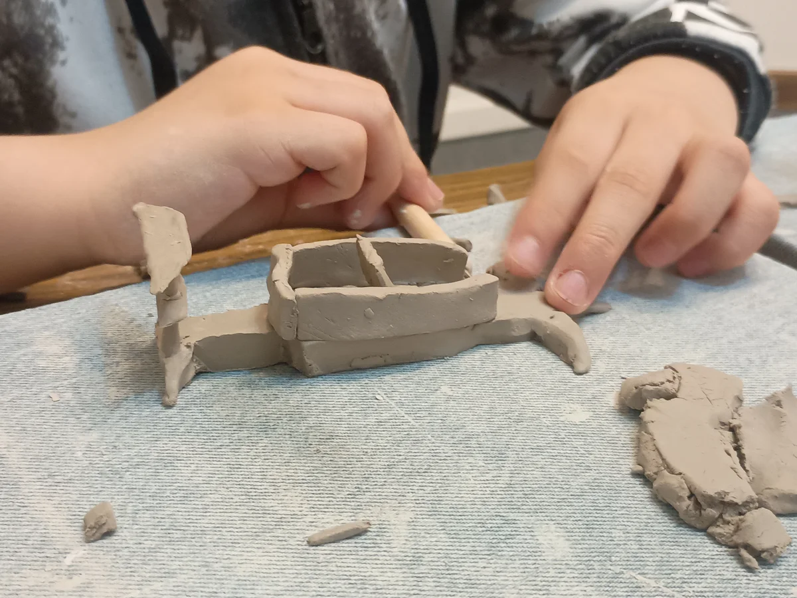
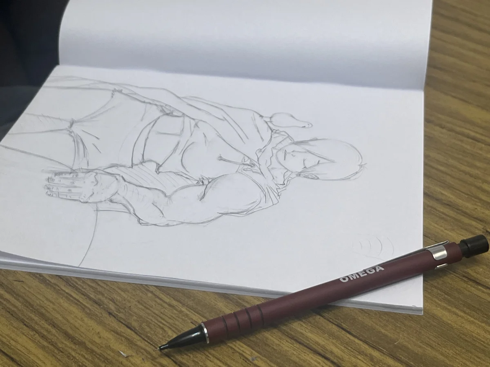
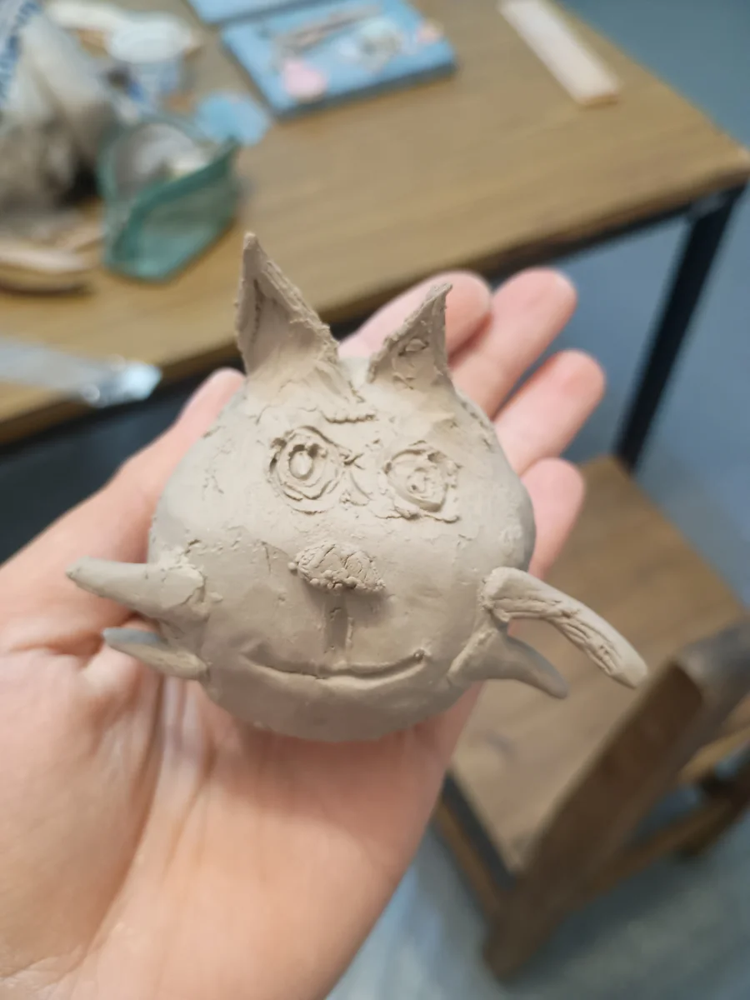
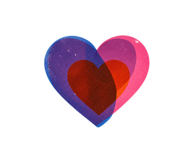
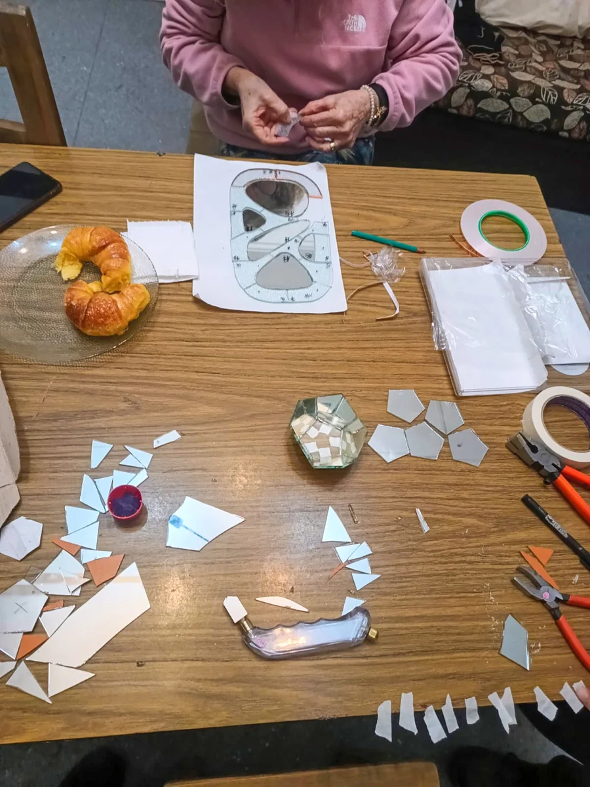
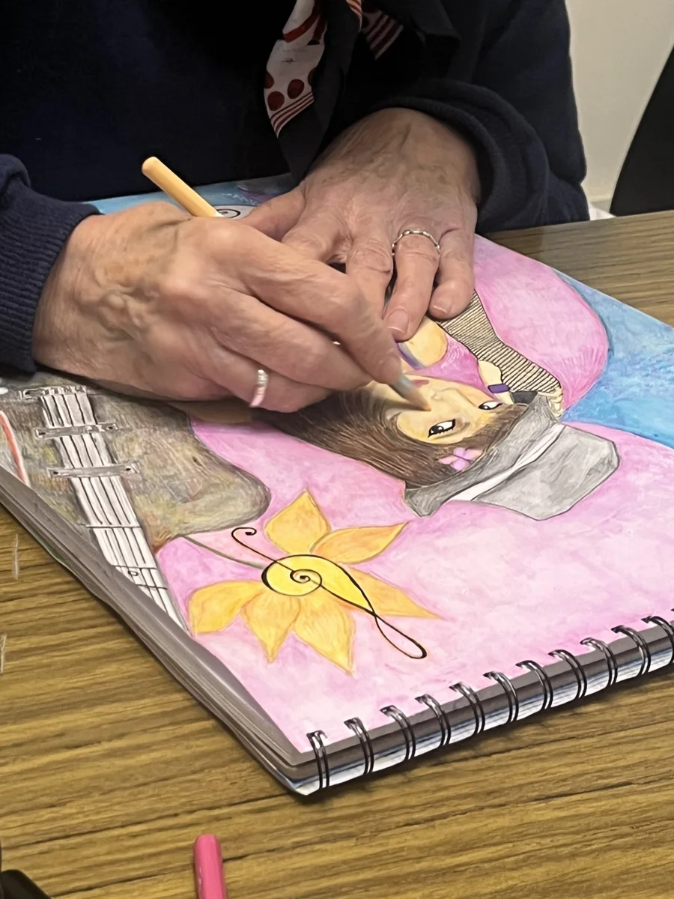
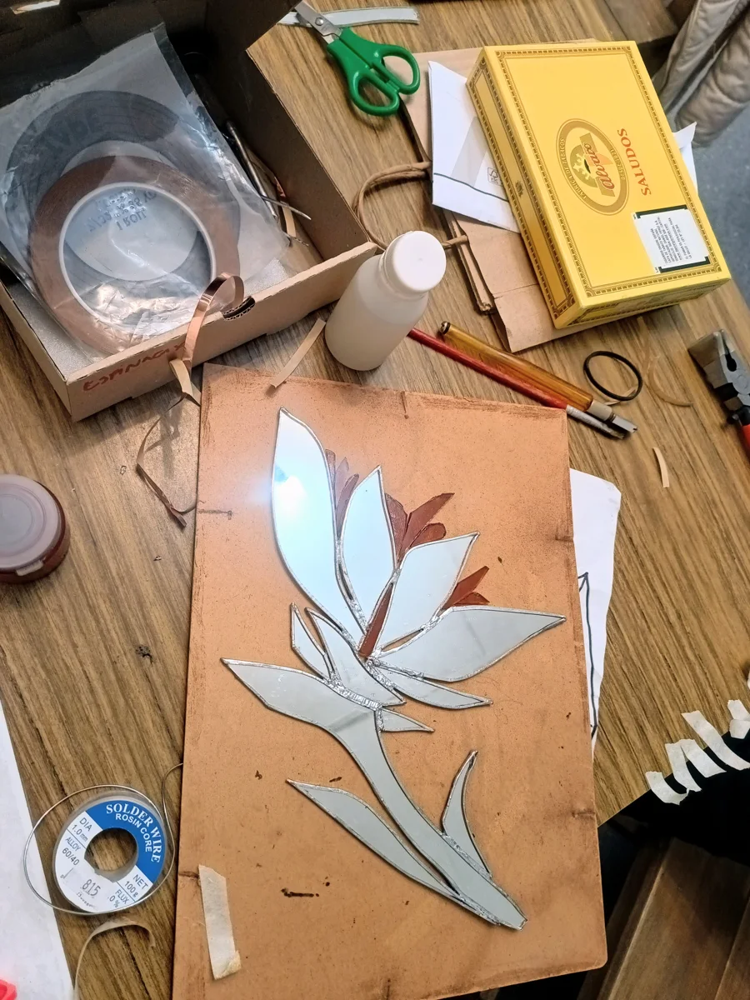
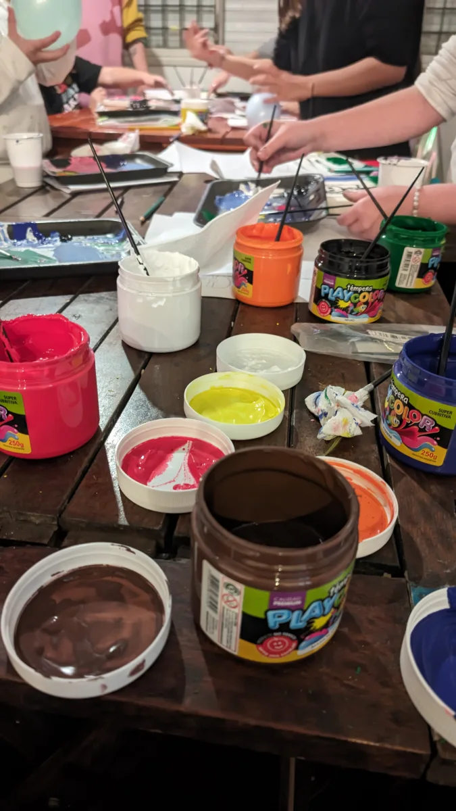

Un espacio para hacer tu propio proyecto.
Artes visuales, artesanías y música para niñas, niños, adolescentes y adultos. Aprendé en grupos por edades, con acompañamiento según tu nivel.
La primera clase es gratuita. Vení a conocer el taller.

Encontrá
tu taller.
Elegí qué te gustaría explorar. Te orientamos para encontrar el grupo que corresponda a tu edad y recorrido.




Artes visuales
Con CordeliaNiñas y niños de 4 a 13 años
Explorá dibujo, pintura, collage y grabado para desarrollar tus propios proyectos.
Consultar por Artes visualesCerámica
Con GuadaNiñas, niños y adolescentes
Aprendé técnicas de construcción en mesa con un enfoque artístico y escultórico.
Consultar por CerámicaIlustración
Con LuceroAdolescentes y adultos
Trabajá dibujo, anatomía, paisajes y naturaleza muerta a partir de tus intereses y materiales.
Consultar por IlustraciónVitró Tiffany
Con OfeliaAdultos
Creá piezas planas o tridimensionales uniendo recortes de vidrio mediante soldadura.
Consultar por Vitró TiffanyPercusión
Con IvánNiñas y niños de 6 a 12 años
Explorá ritmos con distintos instrumentos y ejercicios acordes a tu nivel.
Consultar por PercusiónViolín
Con MischaNiñas, niños, adolescentes y adultos
Consultá por el grupo o la clase particular correspondiente a tu edad y nivel.
Consultar por ViolínCanto
Con JuliaNiñas y niños de 7 a 12 años · Adolescentes desde 13
Clases grupales para niñas y niños y particulares para adolescentes. Consultanos por la propuesta para tu edad.
Consultar por Canto
Cada proyecto tiene su recorrido.
Partimos de lo que cada persona sabe y de lo que le interesa. En clases regulares y semanales, los docentes proponen desafíos acordes al nivel y acompañan el desarrollo de proyectos personales.
Los grupos se organizan por edades. Mantenemos comunicación por mail con las familias o con cada estudiante, según corresponda.
- ExplorarConocer materiales, técnicas y posibilidades.
- ElegirEncontrar intereses y dar forma a una idea propia.
- DesarrollarAvanzar con orientación y nuevos desafíos.


Quiénes acompañan
cada taller.
Docentes con formación y experiencia en sus disciplinas y en espacios educativos.
Guada
CerámicaTécnica en artesanías aplicadas a la industria, con experiencia docente en artes visuales y cerámica para niñas y niños. Estudia artes visuales y artes del fuego en la Universidad Nacional de las Artes.
Ofelia
Vitró TiffanyDocente de tecnología y tallerista de artes para niñas y niños, con formación en vitró y conservación edilicia. Estudia artes visuales y artes del fuego en la Universidad Nacional de las Artes.
Lucero
IlustraciónTécnica en artesanías aplicadas a la industria y docente de tecnología, diseño y programación. Estudia el profesorado de artes visuales con orientación en grabado en Rogelio Yrurtia.
Iván
PercusiónEstudia percusión en el Conservatorio Juan Pedro Esnaola. Tiene experiencia en sonido y composición para teatro y se desempeña como docente de tecnología.
Mischa
ViolínEstudió en el Instituto Superior de Arte del Teatro Colón y en el Conservatorio Superior de Música Pastor Piazzolla. Su trayectoria incluye la Orquesta Juvenil Nacional José de San Martín.
Cordelia
Artes visualesIlustradora y tallerista de collage y dibujo para niñas, niños y adolescentes. Es técnica en diseño y promoción publicitaria y docente de tecnología.
Julia
CantoEstudiante de teatro musical en ISEC, con experiencia en coros y producciones musicales. Acompaña las clases de canto para niñas, niños y adolescentes.

Festejar con las manos en el arte.
Un cumpleaños, muchas ideas.
Para niños y adultos: el arte también se festeja a cualquier edad.
Una celebración para explorar materiales y crear con amigos. Elegí una propuesta de cerámica, pintura o grabado para tu grupo.
¿Qué hacemos en cada propuesta?
Cerámica: modelamos y pintamos una pieza de arcilla. Se retira después del horneado; el plazo se coordina con el taller.
Pintura: exploramos acrílicos y herramientas sobre bastidor. Cada participante se lleva su pintura terminada.
Grabado: creamos una matriz y estampamos una prenda o totebag. Cada participante se lleva su matriz y su estampado.
Antes
de venir.
Algunas respuestas para dar el primer paso.
¿Necesito experiencia previa?
No. Partimos de lo que sabés y de tus intereses, con acompañamiento según tu nivel.
¿Cómo se organizan los grupos?
Por edades. Consultanos para encontrar la propuesta y el grupo adecuados para vos o para quien vaya a asistir.
¿Puedo probar una clase antes de inscribirme?
Sí, la primera clase de los talleres regulares es gratuita. Escribinos para coordinarla. Este beneficio corresponde a los talleres regulares.
¿Con qué frecuencia son las clases?
Los talleres regulares tienen clases semanales. Consultanos por WhatsApp para conocer los grupos disponibles.
¿Los materiales están incluidos?
Depende de la actividad. En Vitró Tiffany los materiales se eligen según cada proyecto. Consultá qué necesitás para el taller o experiencia que elijas.
¿Hay descuentos para hermanos o por varias clases?
Sí. Ofrecemos un 10% de descuento para hermanos y un 10% de descuento por asistir a más de una clase. Escribinos para coordinar la inscripción y consultar cómo se aplica a tu caso.
Vení a conocer Punto y Trama.
Contanos qué te gustaría hacer. Te orientamos sobre la propuesta y el grupo para vos o para quien vaya a asistir.
Tu primera clase de un taller regular es gratuita.